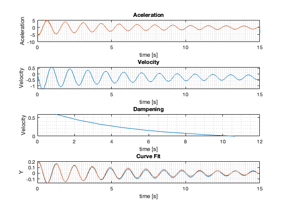

Daten importieren
AccTable = readtable('Versuch2_Daten.xlsx','Range','B6:B15006');
timeTable = readtable('Versuch2_Daten.xlsx','Range','A6:A15006');
AccT = table2array(AccTable);
AccF = lowpass(AccT,1,1000);
Acc = AccF - 9.5545;
time = table2array(timeTable);
r = 0.28;
m = 1.15668;
k = 31.33;
Auslenkung = 0.2;
Airdensety = 1.225;
Area = pi*power(r,2);
v = 0.45;
Wbase = sqrt(k/m);
totalspeed = trapz(Acc);
V = cumtrapz(Acc)/1000;
steigung = time.*0.28;
Z = cumtrapz(V)/1000+steigung+Auslenkung;
maximasN = find(-0.05 < Acc & Acc < 0.05);
AmpZ = V(maximasN);
AmpN = AmpZ(AmpZ>0);
timeZ = time(maximasN);
timeN = timeZ(AmpZ>0);
fo = fitoptions('Method','NonlinearLeastSquares',...
'Lower',[-0.5,-1,-pi/2],...
'Upper',[0.5,1,pi/2],...
'StartPoint',[1 1 0]);
ft = fittype('a*exp(-d/(2*m)*x)*cos(sqrt(k/m-power((d/(2*m)),2))*(x+p))','problem',{'k','m'},'options',fo);
[vara,SimU1] = fit(time,Z,ft,'problem',{k,m})
a = vara.a
d = vara.d
p = vara.p
fitedA = a.*exp(-d./(2*m).*time).*cos(sqrt(k/m-power((d/(2*m)),2)).*(time+p));
dampeningK = d;
Fd = v * d
Cw = (2*Fd)/(Airdensety*power(v,2)*Area)
numberPlots = 4;
subplot(numberPlots,1,1)
plot(time,Acc,time,AccT- 9.5545);
grid('minor')
title('Aceleration')
xlabel('time [s]')
ylabel('Aceleration')
subplot(numberPlots,1,2)
plot(time,V)
grid('minor')
title('Velocity')
xlabel('time [s]')
ylabel('Velocity')
subplot(numberPlots,1,3)
plot(timeN,AmpN);
grid('minor')
title('Dampening')
xlabel('time [s]')
ylabel('Velocity')
subplot(numberPlots,1,4)
plot(time,Z,time,fitedA);
grid('minor')
title('Curve Fit')
xlabel('time [s]')
ylabel('Y')
vara =
General model:
vara(x) = a*exp(-d/(2*m)*x)*cos(sqrt(k/m-power((d/(2*m)),2))*(x+p))
Coefficients (with 95% confidence bounds):
a = 0.1877 (0.1868, 0.1885)
d = 0.2874 (0.2852, 0.2895)
p = -0.07961 (-0.0802, -0.07901)
Problem parameters:
k = 31.33
m = 1.157
SimU1 =
struct with fields:
sse: 2.5292
rsquare: 0.9649
dfe: 14998
adjrsquare: 0.9649
rmse: 0.0130
a =
0.1877
d =
0.2874
p =
-0.0796
Fd =
0.1293
Cw =
4.2332
